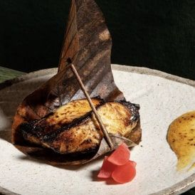
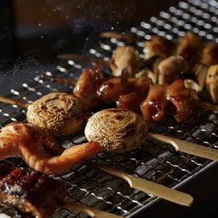
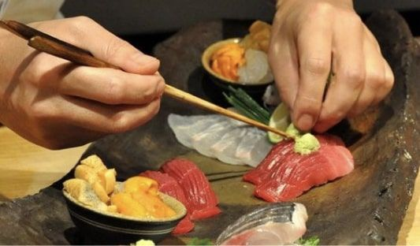
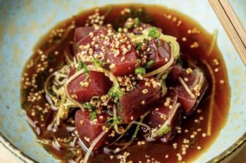

الأطباق المميزة

سمك القد الأسود بالميسو
استمتع بسمك القد الأسود المميز لدينا، وهو سمك طري متبل بشكل مثالي لتجربة طعام لا تُنسى.

تشكيلة من المشويات على طريقة روباتا التقليدية
استمتع باللحوم والمأكولات البحرية والخضروات المشوية على طريقة روباتا التقليدية للحصول على نكهات غنية ومدخنة تسعد حواسك.

السوشي والساشيمي
استمتع بتناول السوشي والساشيمي الرائع المصنوع باستخدام التقنيات والفنون التقليدية.

نيكاي سيفيشي
استمتع بمذاق السيفيشي المنعش الممزوج بمزيج من النكهات اليابانية والبيروفية.

كوكتيلات مميزة
دلل حواسك بمشروبات فريدة من نوعها، مصنوعة يدوياً بعناية فائقة ومستوحاة من مزيج النكهات اليابانية والبيروفية المميز. ستكمل هذه المشروبات الخالية من الكحول تجربة تناول الطعام الخاصة بك في مطعم ايكي.رو، لتضيف لمسة من الانتعاش والإبداع إلى كل طبق.